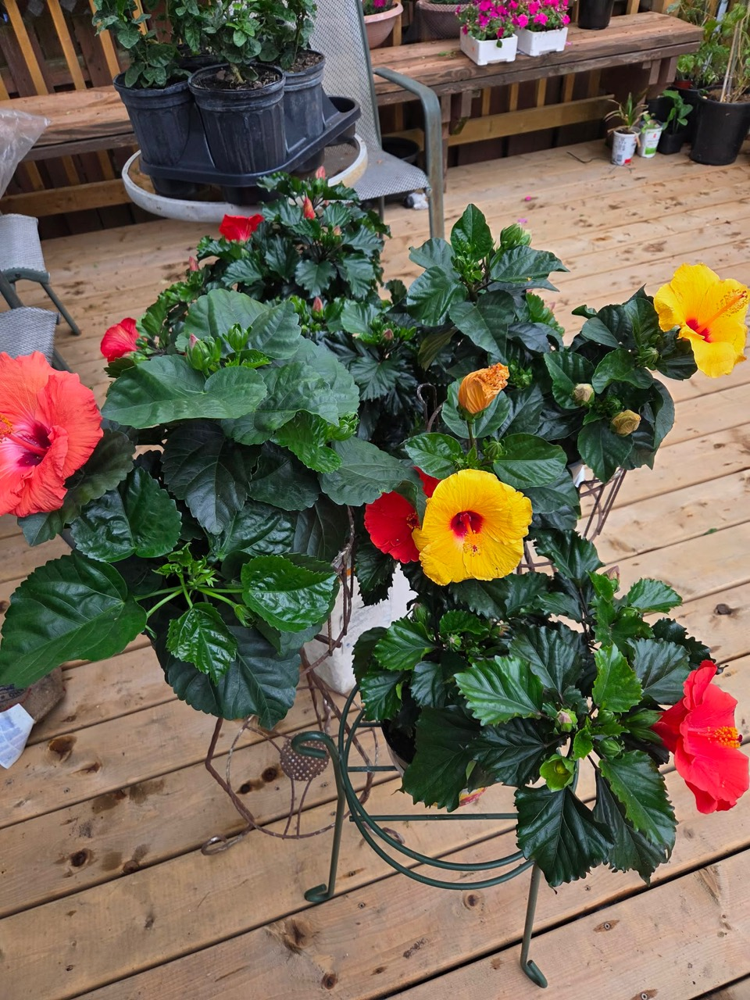
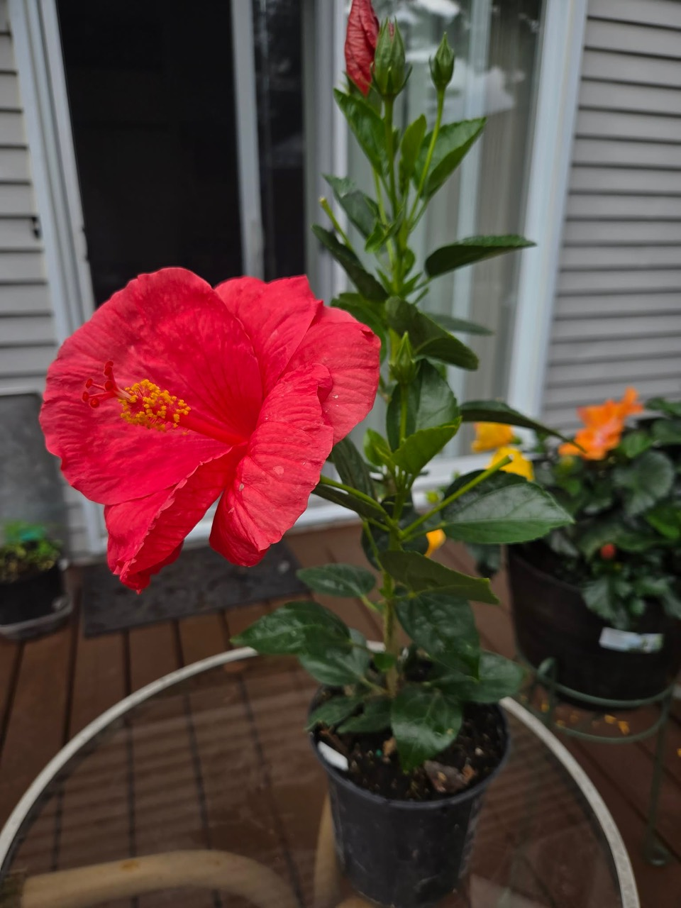
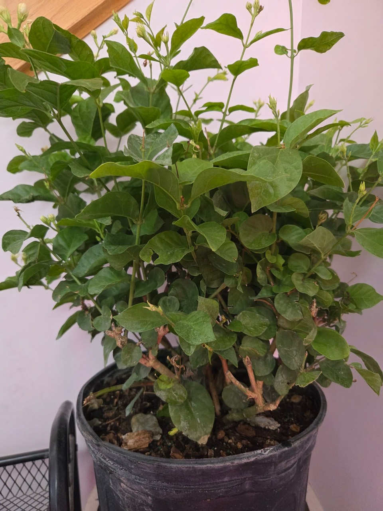
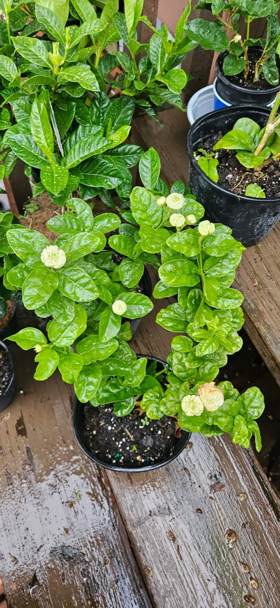
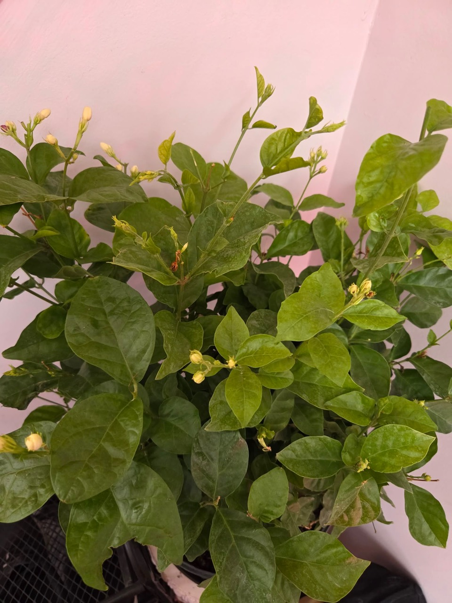
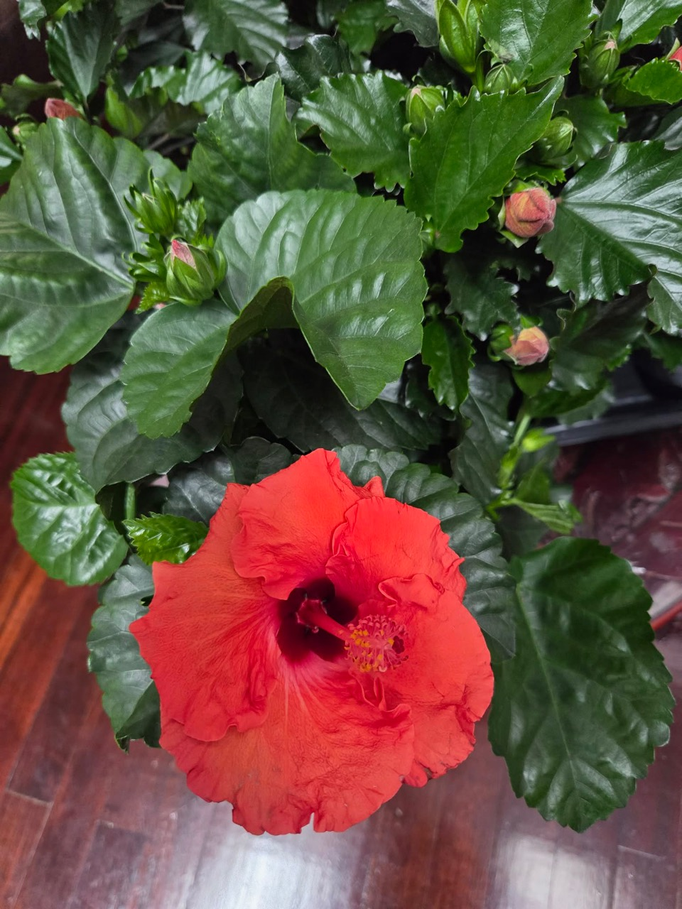

Tropical Hibiscus
Large glossy-leaf hibiscus plants with showy tropical flowers in red, yellow, orange, and coral tones.
Local porch-grown plants
Browse the current plants before messaging on Facebook Marketplace. These listings show the plant types and examples available, with exact blooms and quantities confirmed by message.
Current plant board

Large glossy-leaf hibiscus plants with showy tropical flowers in red, yellow, orange, and coral tones.

Red flowering tropical hibiscus in a nursery pot with fresh buds and open blooms.

Likely Arabian jasmine, also called sambac jasmine, with fragrant white buds on a full potted shrub.

Jasmine with small white double blooms, likely a double-flowered sambac type such as Grand Duke jasmine.

Compact jasmine stock with many unopened buds, a good choice for buyers who want blooms soon.

Additional red hibiscus with a clear bloom shape, fresh buds, and healthy glossy foliage.
Care levels
Best for buyers with a bright porch, deck, balcony, or sunny window.
Keep evenly watered in active growth and avoid letting pots fully dry out for long.
Hibiscus and jasmine can flower repeatedly when warm, bright, and regularly watered.
Marketplace pickup
Add your Facebook Marketplace link, pickup town, prices, and preferred contact details here. Buyers can use the plant names above when asking what is still available.